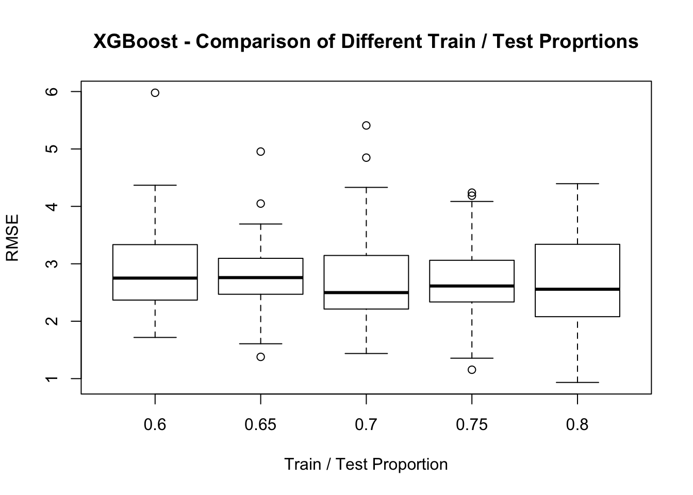
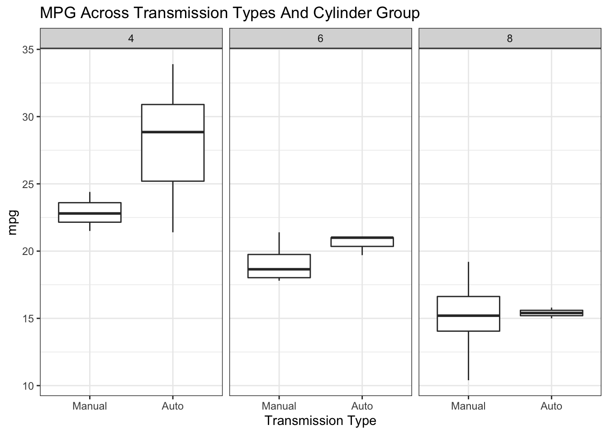
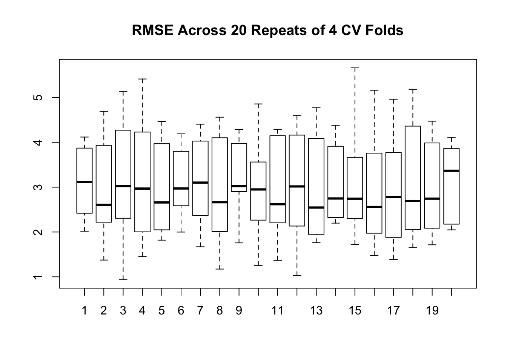

Chapter 5 Caret Package
By now you are probably fatigued with understanding the details of writing the code to split data, doing Cross Validation, storing the results, and looking at descriptive stats associated with the resulting RMSE. And this is all before considering the various parameters associated with whatever method we wish to implement. Each function has its own set of requirements which may not extend to other functions. What we need (well, what we would like) is a framework to streamline this process and automate it as much as possible but not at the expense of understanding the results.
The caret (Classification And Regression Training) package provides a uniform interface for calling different algorithms while simplifying the data splitting and RMSE calculation. It supports many different model types and also provides the ability to tune hyper parameters. Here are some of the features:
- Streamlined and consistent syntax for more than 200 different models
- Can implement any of the 238 different methods using a single function
- Easy data splitting to simplify the creation of train / test pairs
- Realistic model estimates through built-in resampling
- Convenient feature importance determination
- Easy selection of different performance metrics (e.g. “ROC”,“Accuracy”, “Sensitivity”)
- Automated and semi-automated parameter tuning
- Simplifed comparison of different models
Note that caret provides a nice wrapper around the various modeling functions. Since each underlying model is itself a standalone R package and associated set of functions you can always call them directly should you prefer that approach. That’s what we have been doing in the earlier part of this text.
5.1 Putting caret To Work
It’s easy to get lost in all that we have been doing so let’s review what the typical predictive modeling workflow will look like:
- Data Import (.csv., extraction from a database, etc)
- Some Data Visualization
Data Prep (We haven’t done any of this yet) - Missing, imputation - Scaling - Create dummy variables / one hot encoding - Dimensionality Reduction
Data Splitting (training / test) - Determine split ration - K-Fold Cross Validation (repeated)
Modeling / Prediction
Evaluation
To do step 5 requires some predefined idea of a performance metric. We have been using RMSE and will continue to do so as we rework some of the previous examples using the caret package.
5.2 Back To The Beginning
It is implied that in predictive modeling the ultimate goal is to generate a model that could be reasonably applied to new data. As we have learned, it is best to train any model on a data set that has been (re)sampled in some way (e.g. K Fold CV) which should help provide a more realistic estimate of “out of sample” error.
In our earliest example we tried to predict the MPG from mtcars using a basic linear modeling function. The caret package provides a uniform way to do this which allows us to easily substitute in alternative functions without having to majorly change our code.
We can call the train function in such a way as to pass in any arguments that are specific to a given method though in a way we could do for other methods. We can also tell the train function that we want to evaluate RMSE as a performance measure. That is, it will “know” that our primary performance measure for a model is RMSE. Before we do that, however, we’ll make a test / train pair. The caret package provides ways to do that.
5.3 Splitting
createDataPartition can be used to create test and train data splits according to some proportion. There is a function called createFolds can be used to generate balanced cross–validation groupings from a set of data. createResample can be used to make simple bootstrap samples. For now, we’ll just stick with createDataPartition for creating a test/train pair.
set.seed(123) # Make this example reproducible
idx <- createDataPartition(mtcars$mpg, p = .8,
list = FALSE,
times = 1)
head(idx)## Resample1
## [1,] 1
## [2,] 2
## [3,] 3
## [4,] 4
## [5,] 5
## [6,] 6Train <- mtcars[ idx,]
Test <- mtcars[-idx,]
#
nrow(Train)## [1] 28nrow(Test)## [1] 45.4 Calling The train() Function
To actually create a model involves use of the train function which is the premier function in the caret package. It does what it name suggests - train models. Note that we tell it:
- What we are trying to predict (a formula)
- What our data set is (e.g. Train)
- The desired method (“lm”)
- Note that this method name MUST match an existing R modeling function
- A desired scoring metric. In this case we seek to minimize RMSE on future predictions
set.seed(123) # Make this example reproducible
lm_fit <- train(mpg~wt,
data=Train,
method="lm",
metric="RMSE")We get back a single object that contains a lot of information that could help us figure out if the model is worth anything. But first, just type the name of fit object to see what you can see. This shows us information that has been derived from some re sampling activity across a number of bootstrapped samples.
lm_fit## Linear Regression
##
## 28 samples
## 1 predictor
##
## No pre-processing
## Resampling: Bootstrapped (25 reps)
## Summary of sample sizes: 28, 28, 28, 28, 28, 28, ...
## Resampling results:
##
## RMSE Rsquared MAE
## 3.094131 0.8007822 2.430829
##
## Tuning parameter 'intercept' was held constant at a value of TRUEsummary(lm_fit)##
## Call:
## lm(formula = .outcome ~ ., data = dat)
##
## Residuals:
## Min 1Q Median 3Q Max
## -4.7157 -2.1168 -0.1116 1.2523 6.7419
##
## Coefficients:
## Estimate Std. Error t value Pr(>|t|)
## (Intercept) 37.3214 1.8817 19.834 < 2e-16 ***
## wt -5.3015 0.5588 -9.488 6.27e-10 ***
## ---
## Signif. codes: 0 '***' 0.001 '**' 0.01 '*' 0.05 '.' 0.1 ' ' 1
##
## Residual standard error: 2.99 on 26 degrees of freedom
## Multiple R-squared: 0.7759, Adjusted R-squared: 0.7673
## F-statistic: 90.01 on 1 and 26 DF, p-value: 6.267e-10Note that the summary of the model “summary(lm_fit)” returns the same information that would be returned had we used the lm function directly as we did in the previous section. The point is that the train function doesn’t not seek to replace or obscure the resulting model in any way. We can always get whatever information we need from it. So let’s apply this model to the test data frame
compute_rmse(predict(lm_fit,Test),Test$mpg)## [1] 3.424642There is more here than meets the eye.
names(lm_fit)## [1] "method" "modelInfo" "modelType" "results"
## [5] "pred" "bestTune" "call" "dots"
## [9] "metric" "control" "finalModel" "preProcess"
## [13] "trainingData" "resample" "resampledCM" "perfNames"
## [17] "maximize" "yLimits" "times" "levels"
## [21] "terms" "coefnames" "xlevels"str(lm_fit$control,1)## List of 28
## $ method : chr "boot"
## $ number : num 25
## $ repeats : logi NA
## $ search : chr "grid"
## $ p : num 0.75
## $ initialWindow : NULL
## $ horizon : num 1
## $ fixedWindow : logi TRUE
## $ skip : num 0
## $ verboseIter : logi FALSE
## $ returnData : logi TRUE
## $ returnResamp : chr "final"
## $ savePredictions : chr "none"
## $ classProbs : logi FALSE
## $ summaryFunction :function (data, lev = NULL, model = NULL)
## $ selectionFunction: chr "best"
## $ preProcOptions :List of 6
## $ sampling : NULL
## $ index :List of 25
## $ indexOut :List of 25
## $ indexFinal : NULL
## $ timingSamps : num 0
## $ predictionBounds : logi [1:2] FALSE FALSE
## $ seeds :List of 26
## $ adaptive :List of 4
## $ trim : logi FALSE
## $ allowParallel : logi TRUE
## $ yLimits : num [1:2] 9.22 35.07Check out the some of the model characteristics
summary(lm_fit)##
## Call:
## lm(formula = .outcome ~ ., data = dat)
##
## Residuals:
## Min 1Q Median 3Q Max
## -4.7157 -2.1168 -0.1116 1.2523 6.7419
##
## Coefficients:
## Estimate Std. Error t value Pr(>|t|)
## (Intercept) 37.3214 1.8817 19.834 < 2e-16 ***
## wt -5.3015 0.5588 -9.488 6.27e-10 ***
## ---
## Signif. codes: 0 '***' 0.001 '**' 0.01 '*' 0.05 '.' 0.1 ' ' 1
##
## Residual standard error: 2.99 on 26 degrees of freedom
## Multiple R-squared: 0.7759, Adjusted R-squared: 0.7673
## F-statistic: 90.01 on 1 and 26 DF, p-value: 6.267e-10summary(lm_fit$finalModel)$r.squared## [1] 0.7758882We can go right to the final Model which contains the information for the
lm_fit$finalModel##
## Call:
## lm(formula = .outcome ~ ., data = dat)
##
## Coefficients:
## (Intercept) wt
## 37.321 -5.301So it looks like caret did some re sampling for us by default. Actually, it was boostrap sampling that we discussed earluer. However, we can specify cross fold validation if we wanted to. This requires a slightly more involved form of the train function.
You can influence the train function by passing a “special” list / object to it via the trControl argument. This gets a bit confusing because the primary function to train models is called train and the command used to create the special is called trainControl and the argument in the train function is called trControl. With use, it becomes easier to remember the difference though at first it’s confusing.
Here we train the model as before but specifically requesting a Cross Fold Validation method of 10 times. We are requesting verbose output.
control <- trainControl(method = "cv", # Cross Fold
number = 5, # 5 Folds
verboseIter = TRUE) # Verbose
# Train the model
set.seed(123) # Make this example reproducible
my_lm <- train(
mpg ~ .,
Train,
method = "lm",
trControl = control
)## + Fold1: intercept=TRUE
## - Fold1: intercept=TRUE
## + Fold2: intercept=TRUE
## - Fold2: intercept=TRUE
## + Fold3: intercept=TRUE
## - Fold3: intercept=TRUE
## + Fold4: intercept=TRUE
## - Fold4: intercept=TRUE
## + Fold5: intercept=TRUE
## - Fold5: intercept=TRUE
## Aggregating results
## Fitting final model on full training setSo the object returned from caret gives us an estimate of how well the model will perform (based on RMSE) for out of sample data.
my_lm## Linear Regression
##
## 28 samples
## 10 predictors
##
## No pre-processing
## Resampling: Cross-Validated (5 fold)
## Summary of sample sizes: 22, 23, 22, 22, 23
## Resampling results:
##
## RMSE Rsquared MAE
## 3.775606 0.7099801 3.168278
##
## Tuning parameter 'intercept' was held constant at a value of TRUEcompute_rmse(predict(my_lm,Test),Test$mpg)## [1] 2.456504We could also repeat the 5 times CV validation an arbitrary number of times to generate greater confidence in the RMSE estimates returned by the model. Remember, a major reason for using K Fold validation is to better estimate the out of sample error by holding out a portion of the data frame being trained upon.
control <- trainControl(method = "repeatedcv", # Repeated Cross Fold
number = 3, # 5 Folds
repeats = 3, # Repeats
verboseIter = FALSE) # Verbose
set.seed(123) # Make this example reproducible
my_lm <- train(
mpg ~ .,
Train,
method = "lm",
trControl = control
)
compute_rmse(predict(my_lm,Test),Test$mpg)## [1] 2.4565045.5 One Size Fits All
So this is where things get interesting. If we wanted to use another method such as Random Forests, we do NOT have to change much at all. We just provide the name of the desired method which in this case, is ranger which is a function we’ve already seen.
control <- trainControl(method = "cv",
number = 5)
set.seed(123) # Make this example reproducible
my_ranger <- train(
mpg ~ .,
Train,
method = "ranger",
trControl = control
)
my_ranger## Random Forest
##
## 28 samples
## 10 predictors
##
## No pre-processing
## Resampling: Cross-Validated (5 fold)
## Summary of sample sizes: 22, 23, 22, 22, 23
## Resampling results across tuning parameters:
##
## mtry splitrule RMSE Rsquared MAE
## 2 variance 2.425868 0.8804475 2.038274
## 2 extratrees 2.709294 0.8539663 2.278043
## 6 variance 2.350335 0.8880835 1.844644
## 6 extratrees 2.515767 0.8775434 2.099400
## 10 variance 2.369189 0.8874700 1.871631
## 10 extratrees 2.477988 0.8807013 2.069644
##
## Tuning parameter 'min.node.size' was held constant at a value of 5
## RMSE was used to select the optimal model using the smallest value.
## The final values used for the model were mtry = 6, splitrule =
## variance and min.node.size = 5.compute_rmse(predict(my_ranger,Test),Test$mpg)## [1] 1.6353415.6 Hyperparameters
This model returns more information than say the lm function because this method uses something called “hyperparameters” which are arguments to a given method that gets set before you call the method. In this case there are two hyperparameters called mtry and splitrule that assume default variables if we don’t supply values.
We can get a plot of how the RMSE and R squared value varied with different values of mtry as well the splitrule. Here we see that an mtry value of 6 randomly selected columns / variables provides the lowest RMSE.
ggplot(my_ranger) + theme(legend.position = "top")
We can use the tuneLength argument to tell the train function to use N different values of mtry which is a hyperparameter to the randomForest package. The value relates to the number of columns in the data frame. We have 11 total and we are trying to predict one of them (mpg). So we can tell the train function to randomly select N variables (up to 10) when a tree is split.
my_ctrl <- trainControl(
method = "cv",
number = 5,
verboseIter = TRUE
)
set.seed(123) # Make this example reproducible
my_rf <- train(
mpg ~ .,
Train,
method = "rf",
tuneLength = 9, # We'll use 9 different values
trControl = my_ctrl
)## + Fold1: mtry= 2
## - Fold1: mtry= 2
## + Fold1: mtry= 3
## - Fold1: mtry= 3
## + Fold1: mtry= 4
## - Fold1: mtry= 4
## + Fold1: mtry= 5
## - Fold1: mtry= 5
## + Fold1: mtry= 6
## - Fold1: mtry= 6
## + Fold1: mtry= 7
## - Fold1: mtry= 7
## + Fold1: mtry= 8
## - Fold1: mtry= 8
## + Fold1: mtry= 9
## - Fold1: mtry= 9
## + Fold1: mtry=10
## - Fold1: mtry=10
## + Fold2: mtry= 2
## - Fold2: mtry= 2
## + Fold2: mtry= 3
## - Fold2: mtry= 3
## + Fold2: mtry= 4
## - Fold2: mtry= 4
## + Fold2: mtry= 5
## - Fold2: mtry= 5
## + Fold2: mtry= 6
## - Fold2: mtry= 6
## + Fold2: mtry= 7
## - Fold2: mtry= 7
## + Fold2: mtry= 8
## - Fold2: mtry= 8
## + Fold2: mtry= 9
## - Fold2: mtry= 9
## + Fold2: mtry=10
## - Fold2: mtry=10
## + Fold3: mtry= 2
## - Fold3: mtry= 2
## + Fold3: mtry= 3
## - Fold3: mtry= 3
## + Fold3: mtry= 4
## - Fold3: mtry= 4
## + Fold3: mtry= 5
## - Fold3: mtry= 5
## + Fold3: mtry= 6
## - Fold3: mtry= 6
## + Fold3: mtry= 7
## - Fold3: mtry= 7
## + Fold3: mtry= 8
## - Fold3: mtry= 8
## + Fold3: mtry= 9
## - Fold3: mtry= 9
## + Fold3: mtry=10
## - Fold3: mtry=10
## + Fold4: mtry= 2
## - Fold4: mtry= 2
## + Fold4: mtry= 3
## - Fold4: mtry= 3
## + Fold4: mtry= 4
## - Fold4: mtry= 4
## + Fold4: mtry= 5
## - Fold4: mtry= 5
## + Fold4: mtry= 6
## - Fold4: mtry= 6
## + Fold4: mtry= 7
## - Fold4: mtry= 7
## + Fold4: mtry= 8
## - Fold4: mtry= 8
## + Fold4: mtry= 9
## - Fold4: mtry= 9
## + Fold4: mtry=10
## - Fold4: mtry=10
## + Fold5: mtry= 2
## - Fold5: mtry= 2
## + Fold5: mtry= 3
## - Fold5: mtry= 3
## + Fold5: mtry= 4
## - Fold5: mtry= 4
## + Fold5: mtry= 5
## - Fold5: mtry= 5
## + Fold5: mtry= 6
## - Fold5: mtry= 6
## + Fold5: mtry= 7
## - Fold5: mtry= 7
## + Fold5: mtry= 8
## - Fold5: mtry= 8
## + Fold5: mtry= 9
## - Fold5: mtry= 9
## + Fold5: mtry=10
## - Fold5: mtry=10
## Aggregating results
## Selecting tuning parameters
## Fitting mtry = 10 on full training setmy_rf## Random Forest
##
## 28 samples
## 10 predictors
##
## No pre-processing
## Resampling: Cross-Validated (5 fold)
## Summary of sample sizes: 22, 23, 22, 22, 23
## Resampling results across tuning parameters:
##
## mtry RMSE Rsquared MAE
## 2 2.467764 0.8807073 2.056421
## 3 2.348576 0.8877805 1.930817
## 4 2.335320 0.8907982 1.850972
## 5 2.362151 0.8934899 1.854015
## 6 2.354672 0.8969530 1.821895
## 7 2.331950 0.8932683 1.844205
## 8 2.340509 0.8910822 1.836483
## 9 2.341097 0.8938502 1.826219
## 10 2.322416 0.8915664 1.813155
##
## RMSE was used to select the optimal model using the smallest value.
## The final value used for the model was mtry = 10.plot(my_rf)
compute_rmse(predict(my_rf,Test),Test$mpg)## [1] 1.787644If you have a questions about what hyper parameters can be tuned for a given method then you can refer to the online caret documentation Here is a screenshot of the table of supported models and associated tuning parameters.

Another way to do this within the caret package itself is that if you already know the abbreviation for the specific method you wish to use (e.g. “rf”) then you can use some built in functions to help you. Remember that caret does not replace or rewrite functions, it merely provides a nice wrapper around them. Since each underlying model is it a standalone R package and associated set of functions you can always call them directly.
modelLookup("rf")## model parameter label forReg forClass probModel
## 1 rf mtry #Randomly Selected Predictors TRUE TRUE TRUEHere we get the hyper parameters for the ranger function. We see that it has three hyper parameters that could be varied in some way to influence a final model.
modelLookup("ranger")## model parameter label forReg forClass
## 1 ranger mtry #Randomly Selected Predictors TRUE TRUE
## 2 ranger splitrule Splitting Rule TRUE TRUE
## 3 ranger min.node.size Minimal Node Size TRUE TRUE
## probModel
## 1 TRUE
## 2 TRUE
## 3 TRUEIf you just want a list of all the models supported by caret then do something like this:
models <- modelLookup()[,1:3]
nrow(models)## [1] 502# Search for a Model
models[models$model=="rf",]## model parameter label
## 365 rf mtry #Randomly Selected Predictorsmodels[models$model=="ranger",]## model parameter label
## 351 ranger mtry #Randomly Selected Predictors
## 352 ranger splitrule Splitting Rule
## 353 ranger min.node.size Minimal Node SizeSo in the case of the ranger function there are actually three hyper parameters that could be tuned.
my_ctrl <- trainControl(
method = "cv",
number = 3,
verboseIter = FALSE
)
my_ranger <- train(
mpg ~ .,
Train,
method = "ranger",
tuneLength = 6,
trControl = my_ctrl
)
my_ranger## Random Forest
##
## 28 samples
## 10 predictors
##
## No pre-processing
## Resampling: Cross-Validated (3 fold)
## Summary of sample sizes: 19, 19, 18
## Resampling results across tuning parameters:
##
## mtry splitrule RMSE Rsquared MAE
## 2 variance 2.497189 0.8726384 2.005833
## 2 extratrees 2.718910 0.8438907 2.169992
## 3 variance 2.407312 0.8784574 1.950470
## 3 extratrees 2.634763 0.8502132 2.092334
## 5 variance 2.275137 0.8892284 1.844759
## 5 extratrees 2.510311 0.8588586 2.043983
## 6 variance 2.292506 0.8856633 1.881832
## 6 extratrees 2.466888 0.8624334 1.993787
## 8 variance 2.298549 0.8806893 1.849989
## 8 extratrees 2.453970 0.8592534 1.988022
## 10 variance 2.334883 0.8724383 1.900102
## 10 extratrees 2.427173 0.8659399 1.969613
##
## Tuning parameter 'min.node.size' was held constant at a value of 5
## RMSE was used to select the optimal model using the smallest value.
## The final values used for the model were mtry = 5, splitrule =
## variance and min.node.size = 5.compute_rmse(predict(my_ranger,Test),Test$mpg)## [1] 1.713278plot(my_ranger)